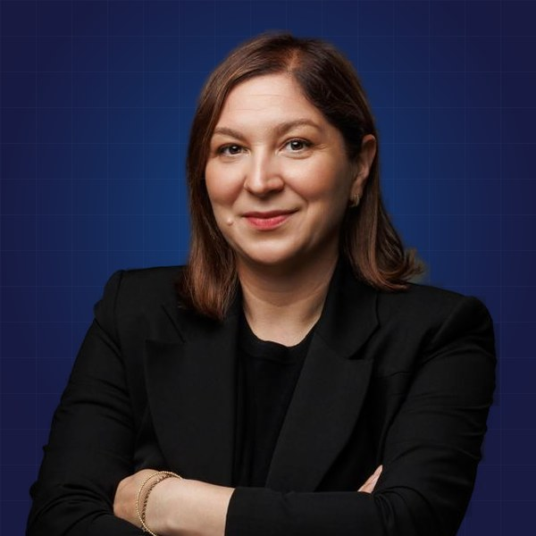
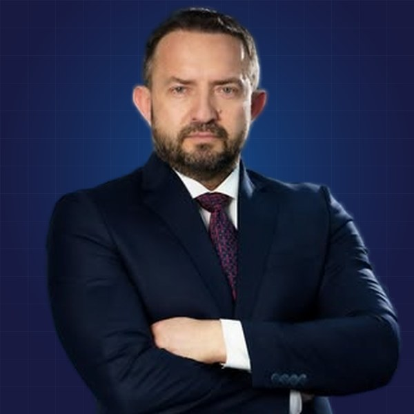
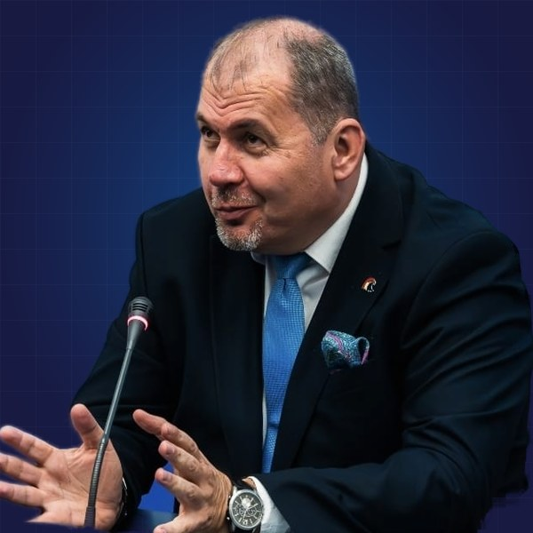

JCI Brașov Beyond the Initiative
Evenimentul a avut loc joi, 26 noiembrie 2026. Mulțumim invitaților, partenerilor și tuturor celor care au fost alături de noi. Mai jos rămân programul, invitații și partenerii serii.
Evenimentul care marchează trecerea JCI Brașov de la grup de inițiativă la grup cu drepturi depline în JCI România. Două paneluri, șapte invitați din mediul de afaceri, educație și administrație, plus două sesiuni de Blitz Networking gândite pentru conexiuni reale și colaborări de durată.
contacte noi într-o singură seară
Două sesiuni de Blitz Networking, în grupuri mici. Fiecare participant are un minut pentru a se prezenta.
Invitați

Panelul IMădălina OkurFondatoare, GreenBooks
Panelul IIBogdan CostașDirector general, Aviația Utilitară București
Panelul ISorin PeligradPreședinte JCI Brașov în 2012, membru Legendary Panelul IIFlorin DragoslavBroker Owner, REMAX Champions Brașov
Panelul IIFlorin DragoslavBroker Owner, REMAX Champions BrașovModerator
Antreprenor cu peste 20 de ani de experiență în comunicare și în dezvoltarea de proiecte educaționale și de training, cu focus pe dezvoltare personală, competențe de viață și carieră pentru tineri.
Citește mai mult
În Londra a fondat și coordonează proiecte de educație non-formală și dezvoltare personală și a fost implicată în programul guvernamental Help to Grow, unde a susținut antreprenori și angajați din companii prin programe de consiliere, dezvoltare personală și wellbeing, cu accent pe creșterea capacității de self-leadership.
În Brașov coordonează, alături de familia sa, un centru educațional dedicat dezvoltării competențelor muzicale ale copiilor și tinerilor, care integrează educația artistică cu dezvoltarea abilităților de gestionare a emoțiilor, a stresului și a propriului parcurs de dezvoltare.
Este președinta Patronatului OFA Brașov (Organizația Femeilor Antreprenor) și se implică activ în proiecte dedicate antreprenoriatului, leadershipului și dezvoltării profesionale.
Prin activitatea sa susține ideea că dezvoltarea profesională durabilă începe cu capacitatea de a te conduce pe tine însuți: prin claritate, responsabilitate, adaptabilitate și încredere.
Programul serii
- Primirea invitațilorCheck-in, ecusoane, networking informal, standurile partenerilor
- Deschiderea oficialăEchipa, povestea grupului și mesajul JCI România
- Panelul I: Puterea comunitățiiDe ce avem nevoie de comunități și cum ne ajută asociațiile să creștemUrmărește Panelul I pe YouTube
- Blitz Networking 1: CunoaștereCine suntem, ce facem și ce ne interesează
- PauzăBăuturi și vizitarea standurilor
- Panelul II: Tehnologia care ne schimbă viațaProgres sau dependență? Inteligența artificială, piața muncii, competențele viitorului
- Blitz Networking 2: ColaborareCe putem construi împreună și ce contacte păstrăm
- Viitorul JCI BrașovDirecții, proiecte, modalități de implicare și mulțumiri partenerilor
- Networking liber și încheiereDiscuții cu invitații, fotografii, schimb de contacte
Imagini de la eveniment
Câteva cadre din seara de 26 noiembrie 2026, de la CATTIA Brașov.


Partenerii evenimentului
- Susține panelul „Puterea comunității”
- Un reprezentant BCR Asigurări printre invitații panelului
- Centrul de Afaceri, Transfer Tehnologic și Incubator
- Strada Institutului 35, Brașov

- Aduce la eveniment o parte din comunitatea sa
- Moderează panelurile evenimentului

- Fotografiile oficiale ale evenimentului
- Parteneriat în regim de barter
Pentru parteneriate la proiectele și evenimentele viitoare, ne puteți scrie la contact@jci-brasov.com sau ne puteți suna la +40 790 827 426.